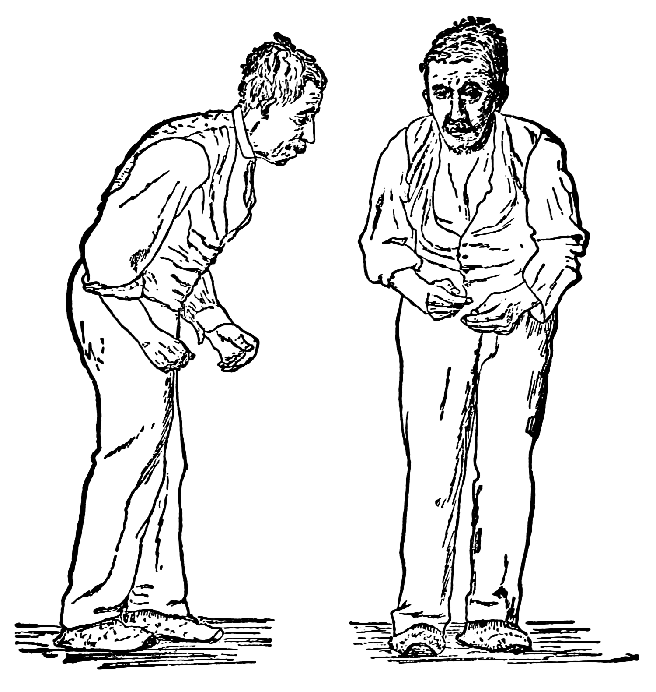
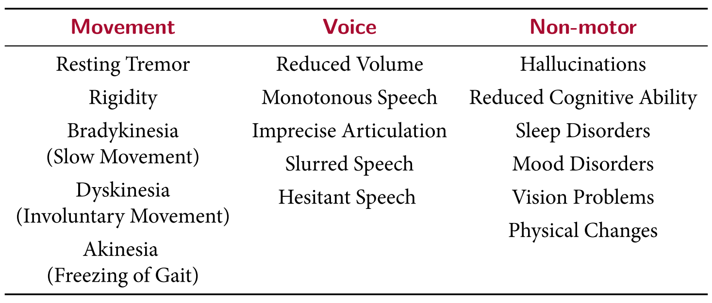
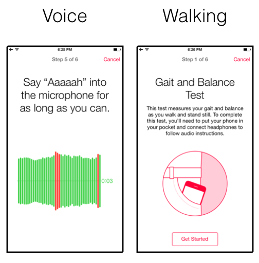

Machine Learning in
Parkinson's Disease Diagnosis
Max Wang
<u5584091@anu.edu.au>
Supervised by:
Dr Deborah Apthorp
Adj/Prof Hanna Suominen
- It is useful to diagnose Parkinson's disease. Parkinson's disease is bad.
- Machine learning can help diagnose Parkinson's disease
- We need to re-think the way machine learning is used.
1 | Parkinson's Disease
“FOR PATIENTS, PARKINSON'S DISEASE IS NOT A TIME-NEUTRAL SITUATION, IT'S A TICKING CLOCK.”
- MICHAEL J. FOX
1 | Parkinson's Disease
Affects 1% of the population
by the age of 70.
1 | Parkinson's Disease



1 | Parkinson's Disease
- Essential Tremor
- Multiple Systems Atropy
- Supranucelar Palsy
- Multiple Schlerosis
- Huntington's Disease
- Wilson's Disease
- Cortical Basal Ganglionic Degeneration
- Normal ressure Hydrocephalus
- ....
1 | Parkinson's Disease
Up to
34% Misdiagnosis Rate J. Jankovic, A. H. Rajput, M. P. McDermott, and D. P. Perl, “The evolution of diagnosis in early Parkinson's disease,” Archives of Neurology, vol. 57, no. 3, pp. 369–372, 2000.
2 | Machine Learning
What can I help you with?
Say "aaaaah" into the microphone

2 | Machine Learning
What can I help you with?
Say "aaaaah" into the microphone
It is highly unlikely you have Parkinson's Disease.
2 | Machine Learning
Why isn't machine learning being used?
Lack of data.

Has PD
No PD
2 | Machine Learning

Has PD
No PD
2 | Machine Learning
Has PD
No PD
2 | Machine Learning
Current Datasets
Has PD
No PD
2 | Machine Learning
Tsanas et al. (2012)
Speech: 98.6%
33 PD, 10 Control.
A. Tsanas, M. A. Little, P. E. McSharry, J. Spielman, and L. O. Ramig, “Novel speech signal processing algorithms for high-accuracy classification of Parkinson’s disease,” IEEE Transactions on Biomedical Engineering, vol. 59, no. 5, pp. 1264–1271, 2012
Has PD
No PD
2 | Machine Learning
Arora et al. (2014)
Accelerometer: 98.0%
10 PD, 10 Control.
S. Arora, V. Venkataraman, S. Donohue, K. M. Biglan, E. R. Dorsey, and M. A. Little, “High accuracy discrimination of Parkinson’s disease participants from healthy controls using smartphones,” in Acoustics, Speech and Signal Processing (ICASSP), 2014 IEEE International Conference on, pp. 3641–3644, IEEE, 2014
Has PD
No PD
2 | Machine Learning
Zhan et al. (2016)
Accelerometer, Speech,
Memory and Tapping 71.0%?
121 PD, 105 Control.
A. Zhan, M. A. Little, D. A. Harris, S. O. Abiola, E. Dorsey, S. Saria, and A. Terzis, “High frequency remote monitoring of Parkinson’s disease via smartphone: platform overview and medication response detection,” arXiv preprint arXiv:1601.00960, 2016.
Has PD
No PD
2 | Machine Learning
Publication bias favors positive results. We need to focus on processes.
3 | Using Machine Learning
The mPower
dataset
900 PD
3,200 Control

3 | Using Machine Learning
Attributions
- Illustration of Parkinson's disease by William Richard Gowers: https://en.wikipedia.org/wiki/File:Paralysis_agitans_(1907,_after_St._Leger).png
- Doctor by Piotrek Chuchla: https://thenounproject.com/term/doctor/21540/
- Lower back pain by Vectors Market: https://thenounproject.com/term/lower-back-pain/1199001/
- Walking by Gerard Higgins: https://thenounproject.com/GerardH/collection/standard-persons/?oq=person&cidx=2&i=217034